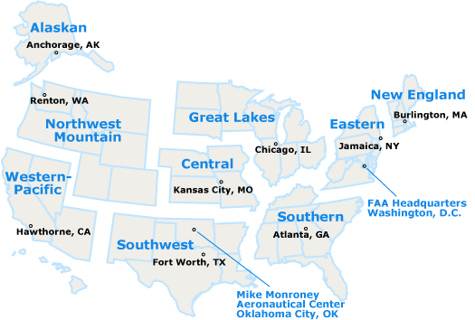
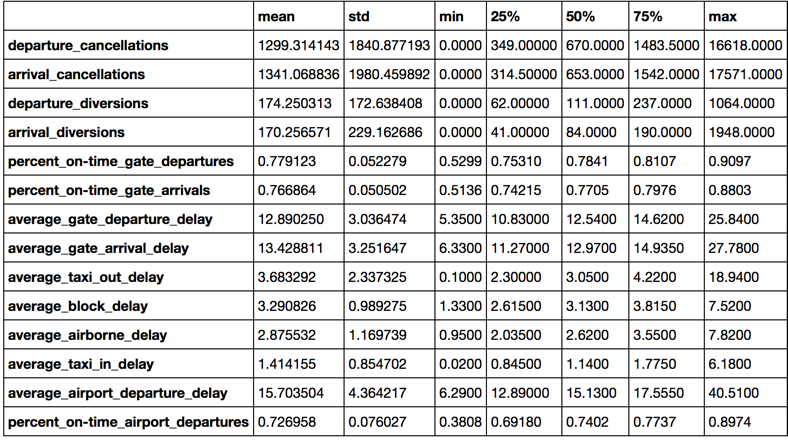

Overview
In this project, we will use three different datasets related to airport operations. These include a dataset detailing the arrival and departure delays/diversions by airport, a dataset that provides metrics related to arrivals and departures for each airport, and a dataset that details names and characteristics for each airport code.
Executive Summary
The purpose of this report is to investigate flight delays for FAA regulated airports in the US.There are significant delays with certain airports.Over the years these delays have not improved or have worsened. The data provided include a dataset detailing the arrival and departure delays/diversions by airport, a dataset that provides metrics related to arrivals and departures for each airport , and a dataset that details names and characteristics for each airport code.
I used Principal Component Analysis and clustering to divide the airport/year pairs into two groups by an aggregated delay measure. 91% of the pairs fell into the first group with better delay metrics, and approximately 9% fell into the second group, which are assumed to have a worse delay metrics.
We have data for 74 airports, five of them fell into the worse group for all the years. These airports are: Chicago O’Hare Int’l Airport, Atlanta Hartsfield, Dallas/Fort Worth Intl, La Guardia, and Newark Liberty Intl. The FAA should focus on improving the performance on these ones first. In the other hand we have the following airports topping the list with the higher percentage of "on time" departures: Westchester county, Newark liberty intl, John f kennedy intl, and Philadelphia intl. The FAA should take a closer look on the factors that lead to these higher percentages and replicate some of that for the worse group.
Risks and Assumptions of our data
We only have 799 records in total. Only 74 airports are included in the dataset. We do not have other factors for delays like the ones related to weather which can be quite common, or mechanical problems with the airplanes...etc. Due to this our analysis will be based on the delay and diversion information present in the data set.
The following airports do not have information for all the years OXR-Oxnard, PSP-Palm Springs Intl, RFD- Chicago/Rockford Intl, and SMF-Sacramento Intl
Background
The FAA wants to cut down on delays nationwide, and wants to investigate the locations with the worst delays. They have provide datasets that have delay information for a 10 year range between 2004 and 2014.
These 5 USA airports are in the list of the 10 world's busiest airports by aircraft movements:
- Hartsfield-Jackson Atlanta International Airport
- Chicago O'Hare International Airport
- Dallas/Fort Worth International Airport
- Los Angeles International Airport
- Denver International Airport
Key statistics table.

We can see below that departure cancellations is highly correlated to arrival cancellations as well as departure diversions to arrival diversions
This graphics below show the average od departure cancellation and departure diversion per year
Histograms
The dataset is somehow normal but skewed to the right
proj07_siluette_scores
Methods
To analyze the airport delays I used Principal Component Analysis to reduce the delay features. There are 14 features in total.
Click here to see Feature correlation here
We can see in the PCA analysis that 85% of the variation in the original data could be captured by three principal components.
We also implemeted k-means clustering and plotted the siluetes scores to determine the optimal K or number of clutters. We can see below the 2 clusters give us the higher siluette score.
Hierarchical clustering algorithms was also used verified they are there are two clusters that you can see plotted in the PCA space in the dynamic graphic below:
Results & Recommendations
The analysis show that the busiest airports have the most delayed as mentioned in the executive summary above.
Next steps:
The FAA should take a look at other factors like weather, mechanical problems with the airplanes, and staff operation. At the same time the FAA should take a closer look a thoses airports that are also busy but were able to have more on time departure rate and see their model to see if the same can me implemeted on the most delayed ones.